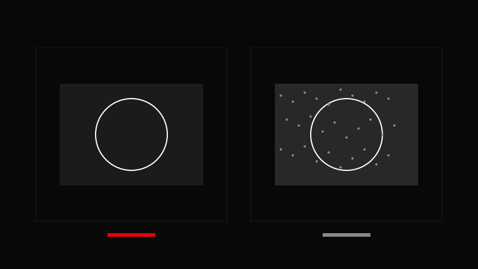

AVA CREATORS TOOLKIT · CAMERA
ISO & Noise
Clean • Controlled • Intentional
Clean • Controlled • Intentional

Higher ISO = more noise.
Set aperture and shutter first.
Raise ISO only as needed.
Expose slightly brighter to reduce noise.
Fix minor noise in post.
Expose to the right (ETTR) to minimize noise.
Using ISO as the primary exposure tool.